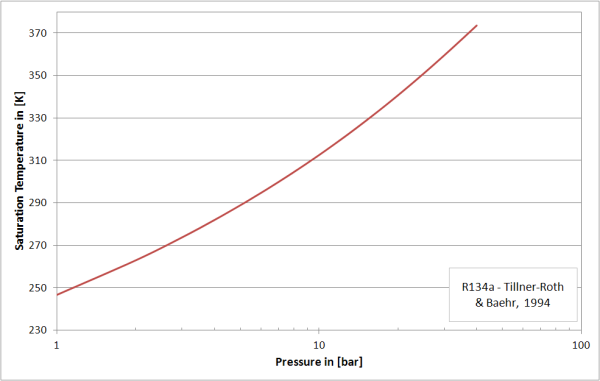

saturationPressureSaturation pressure w.r.t. temperature |
|
Information
This information is part of the Modelica Standard Library maintained by the Modelica Association.
This function calculates the saturation pressure of R134a from the state variable T (temperature). It is modelled by cubic splines which are fitted with non-equidistant grid points derived from the fundamental equation of state of Tillner-Roth and Baehr (1994) and the Maxwell criteria.
Restrictions
It is only valid in the two-phase region (i.e., ptriple ≤ p ≤ pcrit ).

Syntax
p = saturationPressure(T)
Inputs (1)
| T |
Type: Temperature (K) Description: Temperature |
|---|
Outputs (1)
| p |
Type: AbsolutePressure (Pa) Description: Saturation pressure |
|---|